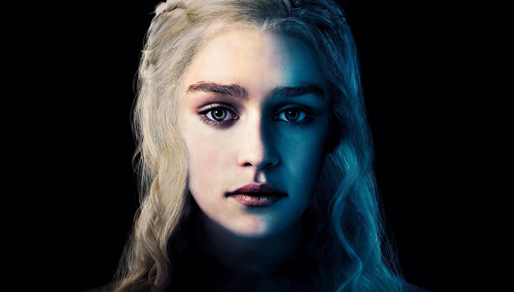

Дейенерис Таргариен
Дейене́рис Таргариéн (англ. Daenerys Targaryen) — персонаж в вымышленном мире в серии книг «Песнь Льда и Огня» Джорджа Мартина и в сериале «Игра престолов». По книгам и сериалу Дейнерис — представительница рода Таргариенов, и дочь короля Семи королевств Эйриса II Безумного.
Дейенерис — одна из важнейших ПОВ-персонажей серии (не фигурирует только в романе «Пир стервятников»), хотя её главы географически оторваны от всех остальных: на протяжении действия сюжета книг она путешествует по странам Востока, пытаясь найти себе союзников, вернуться в Семь Королевств и отвоевать Железный Трон.
Биография
Дейенерис Таргариен — дочь свергнутого короля Семи Королевств из династии Таргариенов Эйериса Безумного. Её мать, королева Рейела Таргариен, скончалась родами и единственной роднёй девочки остался брат Визерис Таргариен. Верный Таргариенам человек сумел переправить детей в Браавос в свой дом, когда гарнизон фамильного замка Таргариенов решил сдать детей на милость победителю. После смерти своего спасителя, дети скитались по Вольным городам, пока не были приняты магистром Пентоса Иллирио Мопатисом, участвовавшим в заговоре против династии Баратеонов. Магистр устроил брак между дотракийским кхалом Дрого и Дейенерис в обмен на участие кхала в реставрации Таргариенов. На свадьбе Дейенерис получает от Иллирио в дар три драконьих яйца и знакомится с опальным рыцарем Джорахом Мормонтом. Став кхалиси и вырвавшись из-под тирании брата, Дейенерис стала взрослеть и обретать характер. В священном городе дотракийцев старухи - прорицательницы сообщили, что Дейнерис суждено родить великого сына — «жеребца, который покроет мир». Однако Визерису не терпелось начать завоевание своего наследия, поэтому он в нарушение законов священного города обнажил меч и угрожал вырезать дитя из чрева своей сестры, поскольку Дрого не исполнил свою часть уговора. За это Дрого убил Визериса (вылил на него расплавленное золото).
Тем временем при дворе короля Роберта Баратеона стало известно о беременности Дейенерис, и король пообещал земли и титул любому, кто убьет последних Таргариенов. После неудачного покушения Дрого поклялся завоевать Вестерос.
Юность Тириона Ланнистера была тяжёлой. Он не снискал любви отца, поскольку его рождение стоило жизни его матери. Единственным относительно близким человеком для него был брат Джейме. В возрасте 13 лет «женился» на простолюдинке по имени Тиша, которая, как рассказал ему Джейме, была проституткой, снятой им специально для карлика, чтобы тот наконец стал мужчиной. Этот «брак» пришёлся не по нраву лорду Тайвину, и он крайне жестоко обошёлся с сыном: по его приказу, каждый из гвардейцев изнасиловал девушку на глазах Тириона. Этот эпизод стал серьёзной психологической травмой для Тириона и оказал существенное влияние на его последующую жизнь.
Личность
Во время нападения на поселение лхазарян кхал Дрого был ранен. Дейенерис попросила спасенную ею от насилия колдунью Мирри Маз Дуур лечить мужа и помочь ей самой при родах. Вскоре Дрого стало хуже и колдунья объявила, что может помочь ему лишь магией крови. В результате Дрого вернулся к жизни, но утратил разум и жажду жизни, Дейенерис потеряла дитя и способность к деторождению, большая часть дотракийцев сбежали. Осознав, что муж не станет прежним, Дейенерис задушила его, возложила драконьи яйца на погребальный костер, приказала привязать к хворосту колдунью и взошла на костер сама. После того, как огонь погас, Дейенерис осталась невредима, а из яиц вылупились три дракона: Дрогон, Рейегаль и Визерион.
Роль в сюжете «Игра престолов»
Сопровождал Роберта Баратеона и его супругу в Затем Дейенерис повела свой маленький кхаласар через Красную Пустошь. Достигнув руин Ваэс Толорро, она отправила трех всадников на разведку. Один из них привел посланников из города Кварта, желавших узреть чудо рождения драконов. С ними Дейенерис прибыла в Кварт. Здесь она попыталась обрести союзников для завоевания Вестероса, но никто не захотел ей помочь. Тогда она обратилась к колдунам в Дом Бессмертных, откуда ей удалось спастись лишь благодаря драконам. Позже в Кварт прибывает три корабля Иллирио Мопатиса с бывшим рыцарем Королевской Гвардии Барристаном Селми и бывшим гладиатором Белвасом-силачом на борту.
По совету Джораха Мормонта Дейенерис решает посетить Астапор и купить армию воинов-евнухов Безупречных. Рабовладельцы соглашаются обменять воинов на одного дракона, однако когда сделка свершается, Дейенерис натравливает драконов и Безупречных на прежних владельцев. Столь же успешно Дейенерис захватывает Юнкай и Миэрин, отменяя в них рабовладение. Под Миэрином она узнает, что Джорах Мормонт долгое время доносил на неё в Вестерос, и несмотря на роль рыцаря в завоевании Миэрина, изгоняет его.
Битва королей
В Миэрине Дейенерис воцаряется как королева. Вскоре ей приходится столкнуться с сопротивлением горожан её новому порядку. Она вынуждена запереть двух драконов под пирамидой из-за нападения Дрогона на девочку; Дрогон же успел улететь. Рабовладельцы объединяются против неё в коалицию и осаждают Миэрин. В городе и под ним начинается эпидемия. В стремлении к миру Дейенерис решает выйти замуж за одного из уважаемых миэринских рабовладельцев Гиздара зо Лорака несмотря на чувства к командиру наемников Даарио Нахарису.
Буря мечей
За день перед свадьбой ко двору Дейенерис прибывает Квентин Мартелл и рассказывает о секретном договоре между Мартеллами и Таргариенами, согласно которому им надлежит пожениться. Дейенерис отказывает ему. После свадьбы с Гиздаром и при его посредничестве между Миэрином и коалицией работорговцев заключается мир, в честь которого устраиваются масштабные игры. Среди потешных актеров выступает и Тирион Ланнистер. Шум и запах крови привлекают к арене Дрогона. Пытаясь остановить начавшееся безумие и обуздать неуправляемого дракона, Дейенерис забирается на спину дракона и покидает город. Чем больше Дрогон уставал, тем лучше Дейенерис удавалось им управлять, пока дракон не опустился на скалу, где их и нашли разведчики кхала Чхако.
Танец с драконами
В самом начале 6 сезона встретилась с кхалом Моро, который намеревался отправить её в Ваэс Дотрак, что и произошло. Прибыла в Ваэс Дотрак, где встретилась с верховной жрицей дотракийцев. Встретилась с Джорахом и Даарио и отвергла предложенный ими же план спасения. Устроила пожар в шатре с кхалами, из-за которого они все сгорели заживо, причем осталась живой и невредимой. Рассталась с Джорахом, приказав ему вылечиться от серой хвори, и повела орду дотракийцев на Миэрин. В 6 серии 6 сезона мельком появлялась в видениях Брана Старка. Воссоединилась с Дрогоном и провозгласила о начале похода на Семь Королевств. Была упомянута Ярой в разговоре с Теоном в 7 серии 6 сезона, поскольку Яра намерена договориться с Дейенерис о союзе для противостояния Эурону. В 8 серии 6 сезона вернулась в Миэрин на Дрогоне. Встретилась с Бесом, Миссандеей и Серым Червем. Уничтожила флот работорговцев в бухте Миэрина, встретилась с Теоном и Ярой. Оставила Миэрин на попечение Даарио, отправилась на завоевание Вестероса вместе с Бесом и Грейджоями.